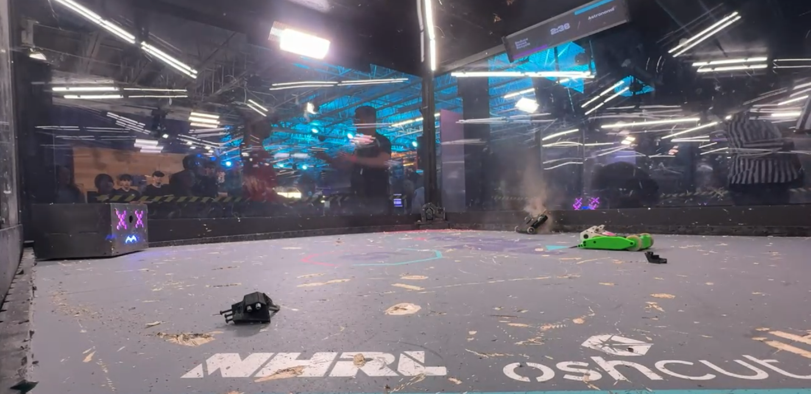
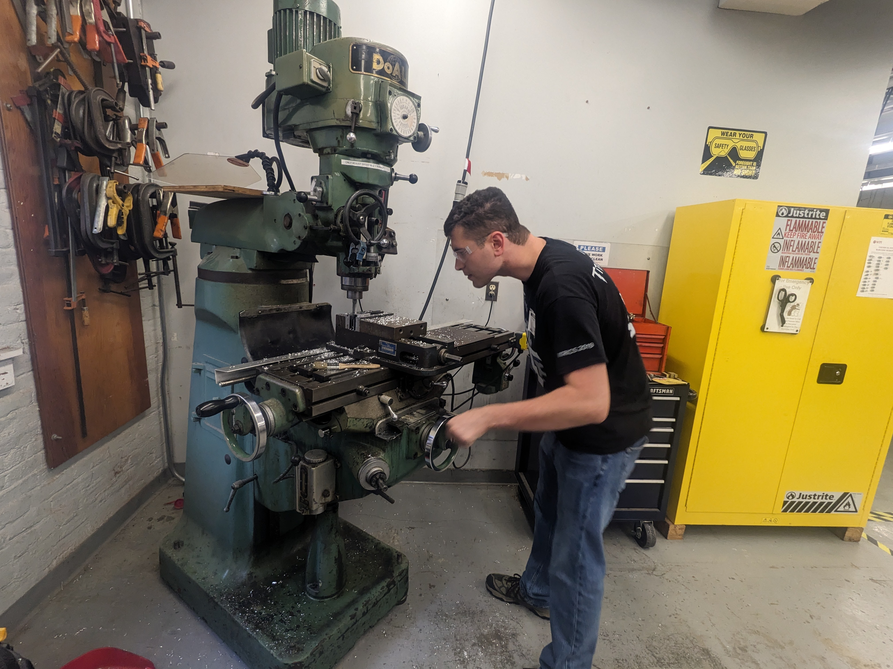
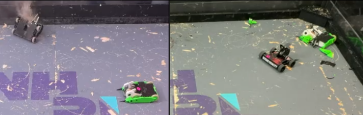

Design Philosophy
The design philosophy of Reduce Reuse Recycle was to create a cheaper battlebot that could be built with minimal machining in preparation for me to finish college, since I will no longer have access to a machine shop. Because of that, reducing the number of new parts as much as possible while also making it simple to repair (such as swapping out the uprights within 10 minutes) were major design requirements. To accomplish this, I 3D printed as many parts as possible. All of the bolts that held the frame together were 10-32, and I machined the remaining custom parts myself to reduce costs as much as possible.
Machining and Setup

To machine the aluminum parts of the robot, I used a wide variety of machines—from CNC machining complex shapes such as the pulley and the interfacing geometry, to using a manual mill to finish faces that would be difficult to fixture on a CNC machine, to tasks as basic as countersinking with a hand drill. I did all of it, from the CAM programming to the drilling. I learned how to machine using a wide variety of tools, ranging from automated CNC machines to manual lathes and mills.
Performance and Lessons Learned

Reduce-Reuse-Recycle v1 has a 2:2 win-loss ratio. During the fights, I learned a lot about the flaws of this robot. While the weapon on the robot is very formidable—being identical to the one used by Very Original—it cannot spin up quickly enough to win the first engagement. A common observation in my fights was very simple: I always lost the first engagement, but if I could mount a comeback, I would win by knocking out my opponent. This means my robot's weapon must spin up faster and that I must win the ground game. If I don't win the first engagement and I face a formidable battlebot like Chainsaw Kitty, they will use it to their advantage, and I will in all likelihood lose the fight. Future iterations of Reduce Reuse Recycle will therefore operate on the principle that the best defense is a good offense, with minimal armor and the remaining weight allocated toward more powerful electronics and a more damaging beater bar.